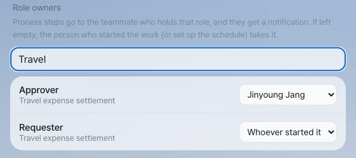
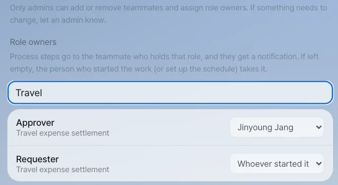
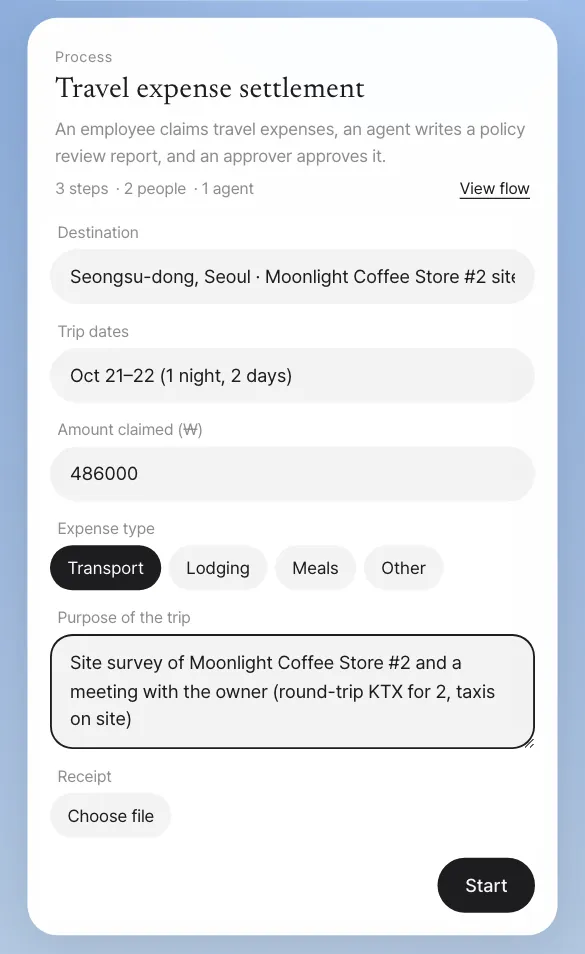
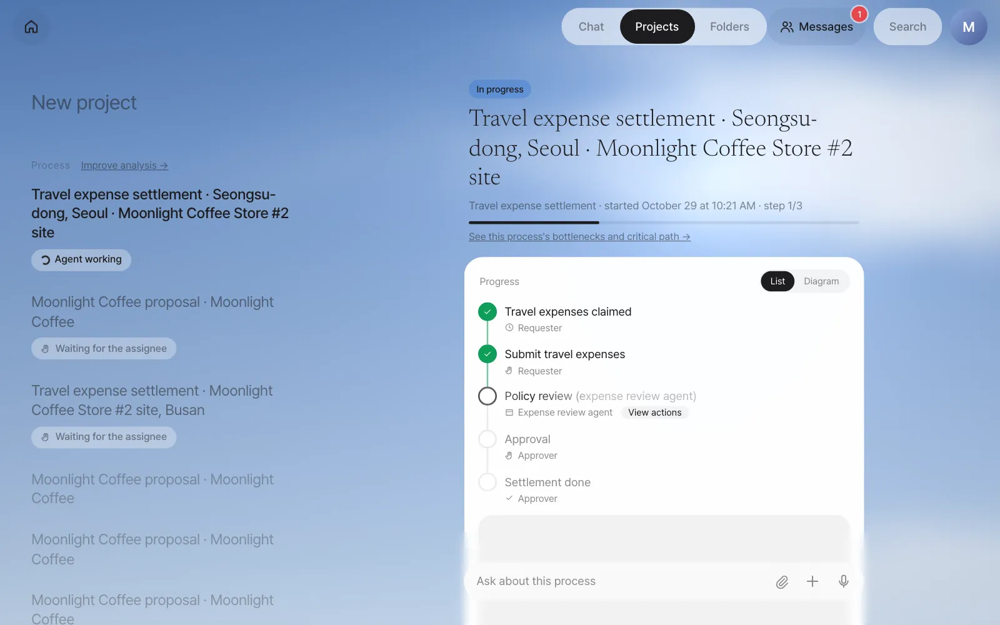
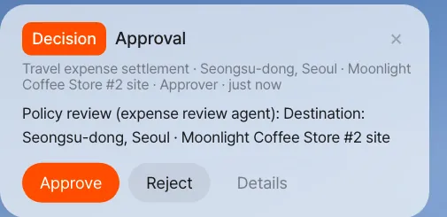
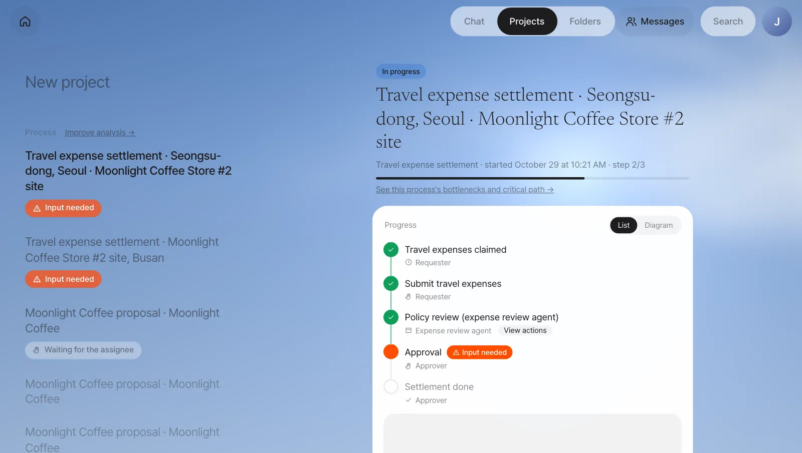
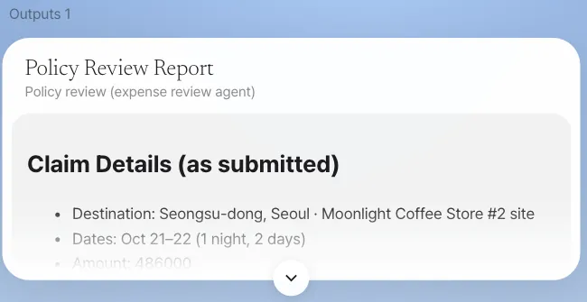

Minji Kim claims her travel expenses for the site survey at Moonlight Coffee Store #2. The expense review agent checks the claim against the policy, and an approval card appears on the Home of the approver, team lead Jinyoung Jang. Along the way you'll see role assignment, notifications, progress, outputs and the rule that "only the people involved can see it."
What happens when a process runs#
In Chapter 17 you made the Moonlight Coffee new store proposal process definition (the blueprint). Each time you start a definition, you get an instance (one run). If "Travel expense settlement" is the definition, "Travel expense settlement · Seongsu-dong, Seoul · Moonlight Coffee Store #2 site" is an instance.
| What you get | Where you see it |
|---|---|
| To-dos | Each step goes to the person (or agent) who holds that step's role. A person's to-do shows up as a Home card and a notification |
| Progress | The instance screen in the Projects tab — the step timeline, a progress bar and the diagram |
| Outputs | The reports and files the steps leave behind. Outputs at the bottom of the instance screen |
| Records | Who submitted what, and when. Later this feeds the bottleneck analysis (Chapter 20) |
The Moonlight Coffee new store proposal has many steps, and its agent steps take a while, so this chapter's exercise uses the example definition Travel expense settlement. It's a short flow — person → agent → person — that's good for seeing one full round. Minji Kim is claiming the expenses for her trip to survey the Moonlight Coffee Store #2 site. If you install with the full profile, this definition is loaded at install time. If Travel expense settlement isn't in your process list, you can build the same flow by chatting, as in Chapter 17 (submit travel expenses → the expense review agent checks the policy → approval).
| Step | Role | Type |
|---|---|---|
| Submit travel expenses | Requester | Person (start form) |
| Policy review (expense review agent) | Expense review agent | Agent |
| Approval | Approver | Person |
Try it 1 — Assign the roles#
Steps are tied to roles, not to people. Who holds a role is set under Role owners in Settings › Team & roles, and only admins can change this screen. In the admin account (the first admin you entered at install, Chapter 25), type Travel in the search box (in the current version the search is case-sensitive, so travel finds nothing) and set Approver to Jinyoung Jang. Leave Requester as Whoever started it. If team lead Jinyoung Jang entered her own email as the first admin during install, just do this in her account.

When someone who isn't an admin opens the same screen, it's read-only. Under the teammate list they see "Only admins can add or remove teammates and assign role owners. If something needs to change, let an admin know." There's no + Add teammate or Remove, and clicking a role field doesn't change it.

Role owners are the company-wide default
The owner you set here applies to every process that uses a role with the same name. If you set Approver to Jinyoung Jang as in the picture above, approvals in any other process with an Approver role ("Draft request, writing & approval", for example, if your company has it) also go to Jinyoung Jang. That's why only admins change this screen. To give a single process a different owner, set a per-process owner. The process's owner or an admin can set it, and it takes priority over the company-wide default. The current Lite screens have no field for per-process owners, so ask an admin (Chapter 25).
Try it 2 — Minji Kim starts it#
In Minji Kim's account, say this in chat:
I'd like to claim my travel expenses
The assistant picks the matching process from the registered ones and shows a process card. The card has a description, the step count (3 steps · 2 people · 1 agent), View flow, and the first step's start form.

The values we entered in our run:
| Field | Value |
|---|---|
| Destination | Seongsu-dong, Seoul · Moonlight Coffee Store #2 site |
| Trip dates | Oct 21–22 (1 night, 2 days) |
| Amount claimed (₩) | 486000 |
| Expense type | Transport |
| Purpose of the trip | Site survey of Moonlight Coffee Store #2 and a meeting with the owner (round-trip KTX for 2, taxis on site) |
Click Start and the card changes to Started · Travel expense settlement. Click that line to open the instance screen. The instance name ("Travel expense settlement · Seongsu-dong, Seoul · Moonlight Coffee Store #2 site") is made from the first value you entered, the destination.
Try it 3 — While the agent works#

The spinner turns only while an agent is actually working. Click View actions to see what the agent read and which tools it used. In our run the policy review was done within about 2 minutes. How long it takes depends on the AI model you use.
If an agent step stops with an error
If an agent step fails because of a brief error, like a dropped database connection or a model that answers too slowly, it retries on its own up to 3 times, at 1-, 2- and 4-minute intervals. Meanwhile, the step in the timeline shows something like "I'll retry automatically in a moment (1/3)." If all three tries fail, or the error is one a retry can't fix, the person who started the instance gets a "The agent step stopped" notification on Home, and the step on the instance screen shows the reason and a Try again button. Once you've checked the cause, click Try again to carry on from that step.
Try it 4 — The to-do that reaches the approver#
When the policy review is done, the next step (approval) goes to the holder of the Approver role, team lead Jinyoung Jang. A decision card appears at the top of Home in her account.

On the instance screen, that step shows an orange Input needed, and the approval form opens below under Needs your input.

Check
- People steps have no spinner. Other participants see only the owner's name and In progress (the "Approval · In progress · Jinyoung Jang" in the meeting materials of Chapter 16).
- Notifications use Process GPT's notifications as is. The same to-do also shows in the to-do list in the Process GPT screens.
Click Approve on the Home card to submit the approval, and a moment later the instance becomes Done. Reject submits a rejection, and Details opens the instance screen.
The progress you saw in the Chapter 16 meeting
In Chapter 16, when team lead Jinyoung Jang asked during the meeting, "How far along is the travel expense settlement?", the helper brought up an instance like this one (Minji Kim's earlier claim, "Travel expense settlement · Moonlight Coffee Store #2 site, Busan", which you can also see in the Projects list). At that point the approval step was In progress · Jinyoung Jang.
Try it 5 — Outputs and completion#
Open the instance again in Minji Kim's account. Every step has turned green, and Outputs has appeared at the bottom.

The input box at the bottom of the instance screen (Ask about this process) is a conversation just for this instance. If you ask here, the assistant reads this instance's status and outputs before answering.
Who can see an instance#
An instance is visible only to the people involved: the person who started it, the people who hold or held a step, and admins.
| Person | Travel expense settlement · Seongsu-dong, Seoul · Moonlight Coffee Store #2 site |
|---|---|
| Minji Kim (started it) | Visible |
| Jinyoung Jang (approval) | Visible |
| Seoyeon Park (not involved) | Not in the Projects list, and opening it by address shows "You don't have access to this process." |
The same rule applies to meeting materials. Even when the helper shows progress during a meeting, only participants who can see that instance see it.
Tips for mixing agent steps and people steps
- Put a person's check step after an agent step. It's best not to hand "choices a person should make," like approvals and reviews, to an agent.
- The previous step's outputs are attached as chips to a people step's form. Clicking a chip opens the reviewer's own copy, so the step's original stays as it is even if you edit it.
Next#
Travel expense settlement and the Moonlight Coffee new store proposal from Chapter 17 were processes whose definitions someone made in advance. But most of the company's proposal work started from a single email without any definition, and each person handled it a little differently. In the next chapter you'll see process mining, which finds the recurring flow in the records of that ad hoc work and turns it into a formal process (Chapter 19).
Check your understanding
- If you leave the Approver role empty (Whoever started it) and Minji Kim starts a travel expense settlement, who gets the approval?
- How does the instance screen look different while the expense review agent is working and while the approval is waiting?
- What would Seoyeon Park need to do to see this instance?
Answer
- It goes to Minji Kim, who started the work. A people role that no one holds goes to whoever started it (the default when you try things out on your own).
- While the agent works, you see the Agent working spinner and View actions. While it waits for a person, there's no spinner — just an orange dot and the owner (Input needed if it's your turn).
- She has to become someone involved in the instance. For example, if she's set as Approver and takes the approval step of a new instance, or if she becomes an admin, she can see it. If you want to share an instance that's already finished, share its output (the policy review report) as in Chapter 14.